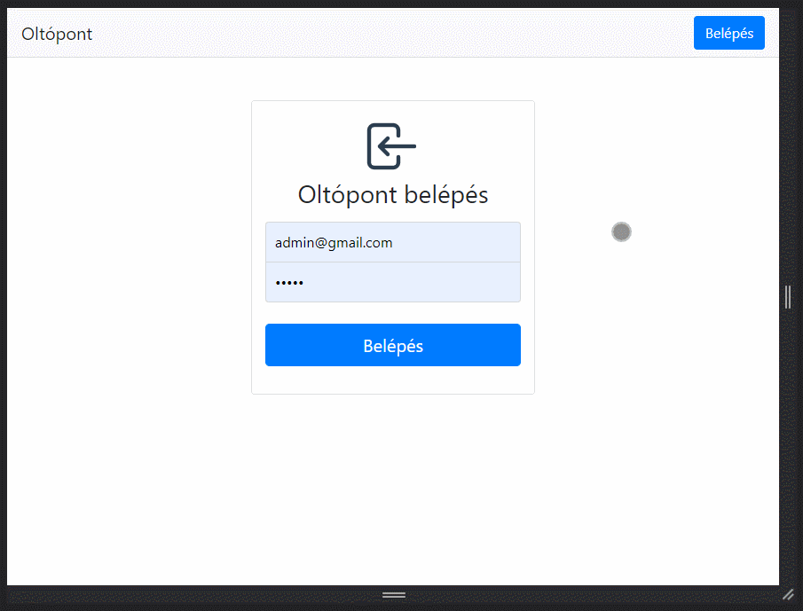
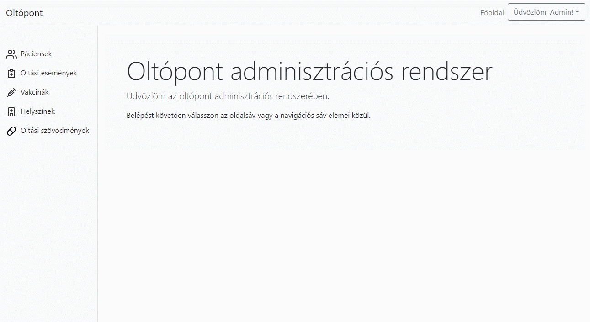
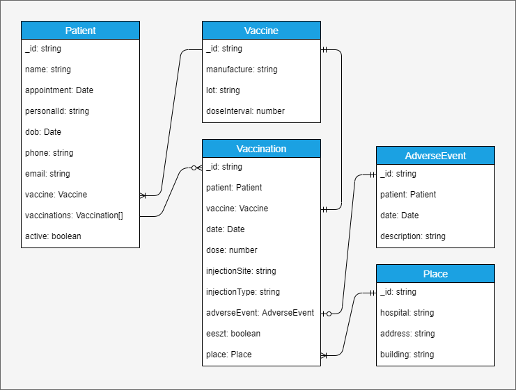
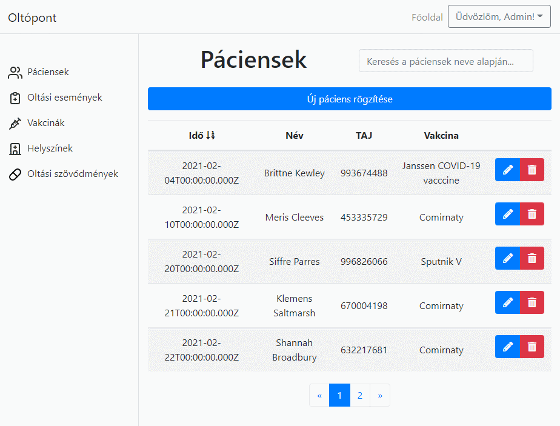
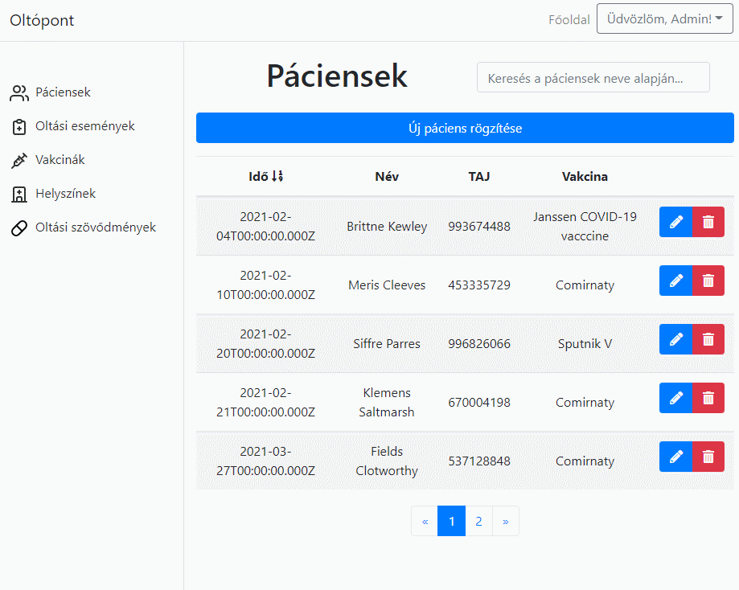

OLTÓPONT ADMIN FELÜLET
Junior Fullstack API fejlesztő képzés
Vizsgaremek
Dr. Benke Péter
LOGIN OLDAL
- JWT autentikáció
- Felhasználó azonosítás email/jelszó párossal
- Felhasználói szerepkörök

ENTITÁSOK
- Páciens
- Oltási esemény
- Vakcina
- Helyszín
- Oltási szövődmény
- Entintás-kapcsolat diagram


LISTA NÉZET
- Adatok megjelenítése oldalakra bontva
- Oszlopok szerinti rendezés
- Név szerinti szűrés

ADATBÁZIS MÓDOSÍTÁS
- Új adat rögzítése
- Űrlap validáció
- Meglévő adatok szerkesztése
- Adatok törlése
